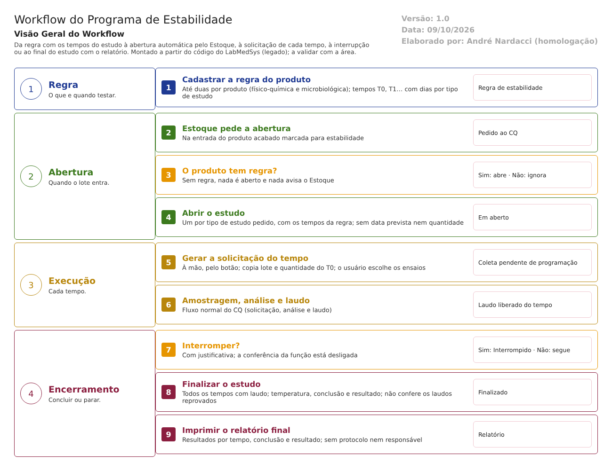

Objetivo
Este documento descreve o fluxo de estabilidade no Controle da Qualidade: a regra com os tempos do estudo, a abertura do acompanhamento quando o produto acabado entra no Estoque, a execução de cada tempo (uma solicitação de análise por ponto), a interrupção e o final do estudo, com o relatório.
Foi montado a partir do código do sistema legado. O que depende da prática da área está marcado como a validar. Os casos de teste estão no fim.
Escopo
- Regra de Estabilidade.
- Abertura automática do acompanhamento, pelo Estoque.
- Acompanhamento da Estabilidade: geração das solicitações de cada tempo e interrupção.
- Final de Estabilidade e relatório final.
Fora do escopo: a amostragem, a análise e o laudo de cada tempo, que seguem o fluxo solicitacao-analise-laudo.md; a guarda das amostras de estabilidade no Estoque (3.estoque/fluxos/almoxarifado-cq.md).
Nomes das telas: como aparecem no menu ou no alto de cada tela. Os caminhos de código ficam só nas regras e são relativos a 4.controle_qualidade/app/. Para encurtar: Estab/ = HSolutions.CQ.UI/Areas/Estabilidade/Controllers/.
Visão geral do processo

Para cada produto acabado, o CQ cadastra uma Regra de Estabilidade (no máximo uma físico-química e uma microbiológica) com os tempos do estudo (T0, T1, T2…) e, para cada tempo, os dias depois do início, por tipo de estudo: acelerado, longa duração, acompanhamento e prateleira.
Quando o Estoque registra a entrada de um lote de produto acabado marcado para estabilidade, ele pede ao CQ que abra o acompanhamento: um estudo por tipo de estudo pedido, com os tempos da regra.
Cada tempo vira uma solicitação de análise quando alguém clica em "Gerar Solicitação"; o sistema não gera nada sozinho pela data. A solicitação segue o fluxo normal de amostragem, análise e laudo.
Com todos os tempos com laudo liberado, o CQ finaliza o estudo com a temperatura, a conclusão e o resultado (aprovado ou reprovado) e imprime o relatório final. O estudo também pode ser interrompido, com justificativa.
Situações do acompanhamento:
| # | Situação | Quando entra | Próximo passo | Tela |
|---|---|---|---|---|
| 1 | Em aberto | O Estoque abre o estudo na entrada do produto acabado | Gerar as solicitações, tempo a tempo | Acompanhamento da Estabilidade |
| 2 | Finalizado | Todos os tempos com laudo liberado; temperatura, conclusão e resultado informados | Imprimir o relatório final | Final de Estabilidade |
| — | Interrompido | "Interromper Estudo", com justificativa | — (fim; não há reabertura) | Acompanhamento da Estabilidade |
Descrição funcional das etapas
"A numeração das regras de negócio é reiniciada em cada atividade, visando facilitar sua identificação e manutenção."
Regra de Estabilidade
Regras de negócio
- RN001 – Obrigatórios: o item (produto) e o tipo ("Selecione um item."). Se o item ainda não existe no CQ, é criado na hora com código e descrição (
Estab/RegraEstabilidadeController.cs:270-309). - RN002 – Cada item tem no máximo duas regras: a primeira vira físico-química e a segunda microbiológica, sem o usuário escolher. A terceira é recusada ("Item já cadastrado") (
RegraEstabilidadeController.cs:282-295). - RN003 – A regra é formada por tempos (T0, T1, T2…). Cada tempo guarda os dias depois do início, por tipo de estudo (acelerado, longa duração, acompanhamento, prateleira). Um tipo só vale se tiver dias maiores que zero. Só o último tempo pode ser excluído (
HSolutions.CQ.Domain/Estabilidade/RegraEstabilidadeDetalhe.cs:15-43;RegraEstabilidadeController.cs:505-549). - RN004 – Os dias não são validados: não se confere a ordem crescente nem valores negativos; um texto que não seja número dá um erro genérico (
RegraEstabilidadeController.cs:399-402,:449-458). - RN005 – Na alteração, todos os tempos são apagados e gravados de novo, sem justificativa e sem histórico campo a campo; fica só quem alterou e quando (
RegraEstabilidadeController.cs:404-458). - RN006 – Não há exclusão da regra; ela é desativada (
RegraEstabilidadeController.cs:379,:410). - RN007 – A regra não tem os campos de um protocolo: condição de armazenamento, métodos, critérios de aceitação, número de lotes (
HSolutions.CQ.Domain/Estabilidade/RegraEstabilidade.cs:12-17).
Telas do sistema
| Módulo | Tela | Finalidade |
|---|---|---|
| Controle da Qualidade | Regra Estabilidade | Tempos e dias do estudo, por produto e tipo de análise |
Abertura do acompanhamento
Regras de negócio
- RN001 – O acompanhamento é aberto só pelo Estoque, na entrada do produto acabado marcada para estabilidade. O Estoque envia o produto, o lote do fabricante, a entrada, os tipos de análise e de estudo e o usuário. Não há abertura manual na tela (
HSolutions.CQ.UI/Api/AcompanhamentoEstabilidadeController.cs:80-187). - RN002 – Para cada tipo de análise, o sistema procura a regra do produto e abre um estudo por tipo de estudo pedido que tenha dias na regra. Sem regra, nada é aberto e nenhum aviso volta ao Estoque (
AcompanhamentoEstabilidadeController.cs:102-155). - RN003 – O estudo nasce Em aberto, com a data do servidor e um código com ano, sequência e tipo de análise (
AcompanhamentoEstabilidadeController.cs:203-214). - RN004 – Cada tempo da regra vira uma linha do estudo com os dias previstos. Não há data prevista calculada nem aviso de tempo próximo ou atrasado (
AcompanhamentoEstabilidadeController.cs:216-229). - RN005 – O estudo não guarda a quantidade reservada para estabilidade, a condição de armazenamento nem a data de início (
HSolutions.CQ.Domain/Estabilidade/AcompanhamentoEstabilidade.cs:33-48).
Telas do sistema
| Módulo | Tela | Finalidade |
|---|---|---|
| Estoque | Entrada de produto acabado / almoxarifado do CQ | Pedem a abertura do estudo |
| Controle da Qualidade | Acompanhamento da Estabilidade | Consultar o estudo aberto |
Execução dos tempos
Regras de negócio
- RN001 – A solicitação de cada tempo é gerada à mão, pelo botão "Gerar Solicitação", que aparece só no primeiro tempo ainda sem solicitação e com o estudo Em aberto. Nada é gerado pela data (
Estab/AcompanhamentoController.cs:184-246). - RN002 – Para gerar, o sistema exige o lote no Estoque ("Lote não encontrado!"), o almoxarifado de estabilidade ("Almoxarifado de estabilidade não encontrado!"), o motivo ligado a ele ("Motivo não cadastrado!") e a solicitação do T0 ("Solicitação T0 não encontrada!"). Lote, validade, quantidade e volumes são copiados do T0 (
AcompanhamentoController.cs:400-430). - RN003 – O usuário escolhe os ensaios da solicitação (
AcompanhamentoController.cs:194-222). - RN004 – A solicitação nasce em Coleta pendente de programação, marcada como estabilidade, com o número do tempo e o motivo do almoxarifado de estabilidade, e segue o fluxo normal. Fica no histórico (
AcompanhamentoController.cs:432-467). - RN005 – A situação de cada tempo vem da solicitação: "Aguardando" sem solicitação; "Laudo liberado" quando a análise termina, com o botão "Imprimir Laudo" (
AcompanhamentoController.cs:296-325). - RN006 – Tempo atrasado não tem tratamento: nem aviso, nem bloqueio, nem justificativa (inferência: o código não compara datas).
Telas do sistema
| Módulo | Tela | Finalidade |
|---|---|---|
| Controle da Qualidade | Acompanhamento da Estabilidade | Gerar a solicitação de cada tempo e ver a situação |
Interrupção
Regras de negócio
- RN001 – "Interromper Estudo" pede confirmação e justificativa. Se algum tempo tiver solicitação sem laudo liberado, a tela avisa "Existem solicitações pendentes!" e não segue; essa conferência é só da tela (
HSolutions.CQ.UI/Areas/Estabilidade/Script/AcompanhamentoEdit.js:58-87). - RN002 – O estudo passa a Interrompido, com usuário, data e histórico com a justificativa (
AcompanhamentoController.cs:133-148). - RN003 – A conferência da função "Estabilidade" existe no código, mas está desligada (o resultado é sempre "sim"): qualquer usuário com a tela no menu interrompe (
AcompanhamentoController.cs:168-178;Estab/FinalEstabilidadeController.cs:265). - RN004 – Interrompido, o estudo não pode ser editado nem receber novas solicitações; as já geradas continuam como estão (
AcompanhamentoController.cs:385).
Telas do sistema
| Módulo | Tela | Finalidade |
|---|---|---|
| Controle da Qualidade | Acompanhamento da Estabilidade; Final de Estabilidade | Interromper o estudo |
Final de Estabilidade
Regras de negócio
- RN001 – Para finalizar, todos os tempos precisam ter solicitação com laudo liberado ("Tempo X sem solicitação!", "Solicitação N está pendente!", "Existem pendências no estudo!") (
Estab/FinalEstabilidadeController.cs:176-207). - RN002 – Obrigatórios: temperatura (texto livre), conclusão e resultado (aprovado ou reprovado) ("Temperatura não foi informada!"). A observação é opcional (
FinalEstabilidadeController.cs:209-216). - RN003 – O sistema não confere os resultados dos tempos: o estudo pode ser finalizado como aprovado mesmo com algum laudo reprovado (
FinalEstabilidadeController.cs:199-224). - RN004 – O estudo passa a Finalizado com o resultado, o usuário e a data, e vai para o histórico com a justificativa digitada ou, sem ela, com o texto fixo "Alteração". Sem senha (
FinalEstabilidadeController.cs:219-231). - RN005 – Finalizado ou interrompido, os dados finais ficam bloqueados (
FinalEstabilidadeController.cs:343). - RN006 – O relatório final traz o código do estudo, o produto, o lote, a validade, os tipos de estudo e de análise, a temperatura, os resultados de cada ensaio por tempo (com especificação e unidade), a data programada (a do T0 mais os dias) e a realizada, a conclusão e o resultado. Não traz o protocolo, os métodos nem quem aprovou, e o campo "Data de Fabricação" mostra, na verdade, a data de entrada do T0 (
HSolutions.CQ.UI/Controllers/Services/ObterRelatorioFinalEstabilidadeService.cs:80-89,:138-144,:240-263).
Telas do sistema
| Módulo | Tela | Finalidade |
|---|---|---|
| Controle da Qualidade | Final de Estabilidade | Concluir o estudo e imprimir o relatório final |
Pontos de atenção
1. A regra não é um protocolo. Faltam condição de armazenamento (só uma temperatura em texto no fim), métodos, critérios de aceitação e número de lotes (RDC 658/2022, arts. 275 e 277).
2. Não há controle de lotes por ano. Nada confere se ao menos um lote por ano entrou no programa (art. 280). E, se o produto não tiver regra, o pedido do Estoque é ignorado sem aviso.
3. Os tempos não têm data nem alerta. Cada tempo depende de alguém clicar no botão; não há data prevista na tela nem aviso de atraso.
4. Resultado fora de especificação não muda nada. Não abre investigação nem comunicação (arts. 287 e 288), e o estudo pode ser finalizado como aprovado com laudo reprovado.
5. Histórico frágil. A regra é alterada apagando e regravando os tempos, sem justificativa; a finalização usa o texto fixo "Alteração" quando não há justificativa; não há assinatura (art. 125).
6. Quem interrompe ou finaliza não é conferido. A conferência da função de estabilidade está desligada no código, e a trava de pendências antes de interromper é só da tela.
7. O relatório final está incompleto e com um rótulo errado. Não identifica protocolo, condição de armazenamento nem o responsável; a "Data de Fabricação" é a data de entrada (art. 290).
Casos de teste
Dados: um produto acabado TESTE PRODUTO ACABADO com entrada no Estoque marcada para estabilidade (depende do Estoque; ver 3.estoque/fluxos/devolucao-entrada-producao.md); o almoxarifado e o motivo de estabilidade TESTE.
| Caso | O que fazer | Resultado esperado |
|---|---|---|
| CT-CQ-040 | Regra de estabilidade com tempos de 30, 10 e -5 dias | Pela norma, recusa. Registrar se aceitar (RN004 da regra) |
| CT-CQ-041 | Terceira regra para o mesmo produto | Recusa: "Item já cadastrado" |
| CT-CQ-042 | Alterar a regra e consultar o histórico | Registrar a falta de justificativa e de histórico (ponto 5) |
| CT-CQ-043 | Entrada de produto acabado para estabilidade sem regra cadastrada | Registrar que nenhum estudo é aberto e nada avisa (ponto 2) |
| CT-CQ-044 | Entrada com regra; consultar o Acompanhamento | Estudo Em aberto, com os tempos e dias da regra |
| CT-CQ-045 | Gerar a solicitação do T1 sem o almoxarifado de estabilidade cadastrado | Recusa: "Almoxarifado de estabilidade não encontrado!" |
| CT-CQ-046 | Gerar a solicitação do T1 | Solicitação em Coleta pendente de programação, marcada como estabilidade |
| CT-CQ-047 | Deixar passar a data de um tempo | Registrar que não há aviso (ponto 3) |
| CT-CQ-048 | Interromper com solicitação pendente | A tela recusa: "Existem solicitações pendentes!" |
| CT-CQ-049 | Interromper com um usuário sem a função de estabilidade | Pela norma, recusa. Registrar se interromper (ponto 6) |
| CT-CQ-050 | Finalizar com um tempo ainda sem laudo | Recusa: "Existem pendências no estudo!" |
| CT-CQ-051 | Finalizar como aprovado com um tempo de laudo reprovado | Pela norma, recusa ou exige investigação. Registrar se aceitar (ponto 4) |
| CT-CQ-052 | Imprimir o relatório final | Conferir a "Data de Fabricação" e a ausência de protocolo e responsável (ponto 7) |
Prioridade (testes por risco): CT-CQ-051, 043, 049 e 042 primeiro. Eles tocam a decisão sobre o produto no mercado, a cobertura do programa e a trilha de auditoria.